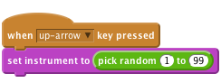

Scratch Card - Piano
Level 5
Draw a piano by creating black and white rectangles.

Now create a script which plays a note when the “a” key is pressed.
```blocks
when [a v] key pressed
broadcast [piano-1 v]
when I receive [piano-1 v]
play note (60 v) for (0.5) beats+ Create two more notes when you press “s” and “d” on the keyboard.blocks
when [a v] key pressed
broadcast [piano-1 v]
when [s v] key pressed
broadcast [piano-2 v]
when [d v] key pressed
broadcast [piano-3 v]
when I receive [piano-1 v]
play note (60 v) for (0.5) beats
when I receive [piano-2 v]
play note (64 v) for (0.5) beats
when I receive [piano-3 v]
play note (67 v) for (0.5) beats
```


costume1.when I receive [piano-2 v]
switch to costume [costume3 v]
play note (64 v) for (0.5) beats
switch to costume [costume1 v]
when I receive [piano-3 v]
switch to costume [costume4 v]
play note (67 v) for (0.5) beats
switch to costume [costume1 v]
```
